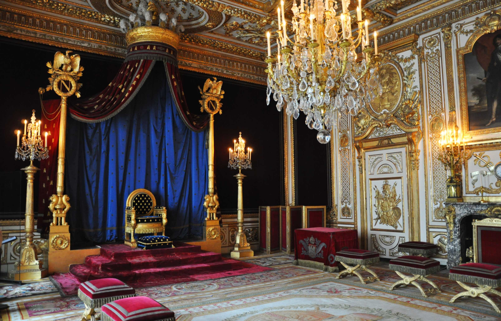
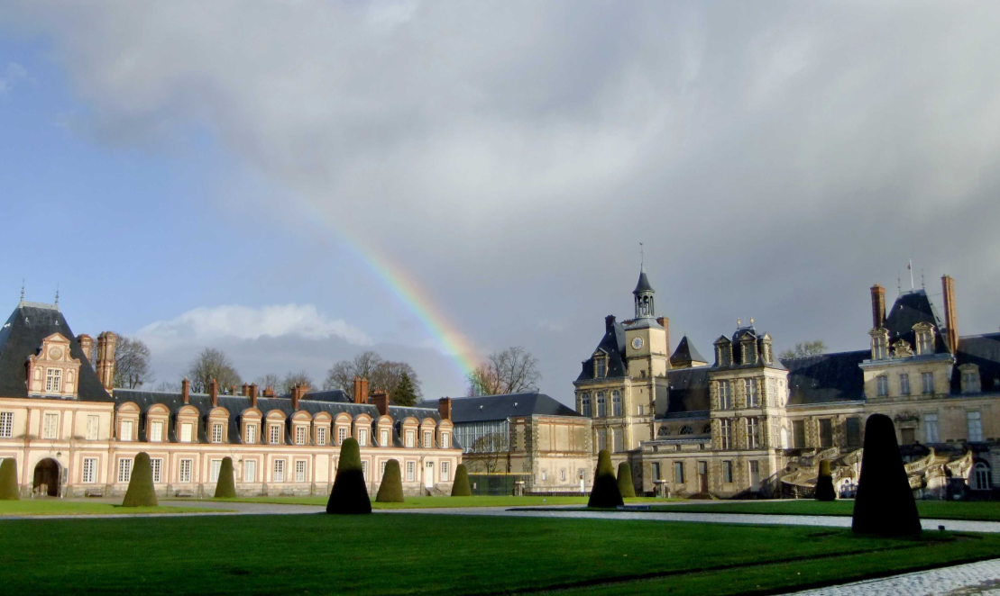
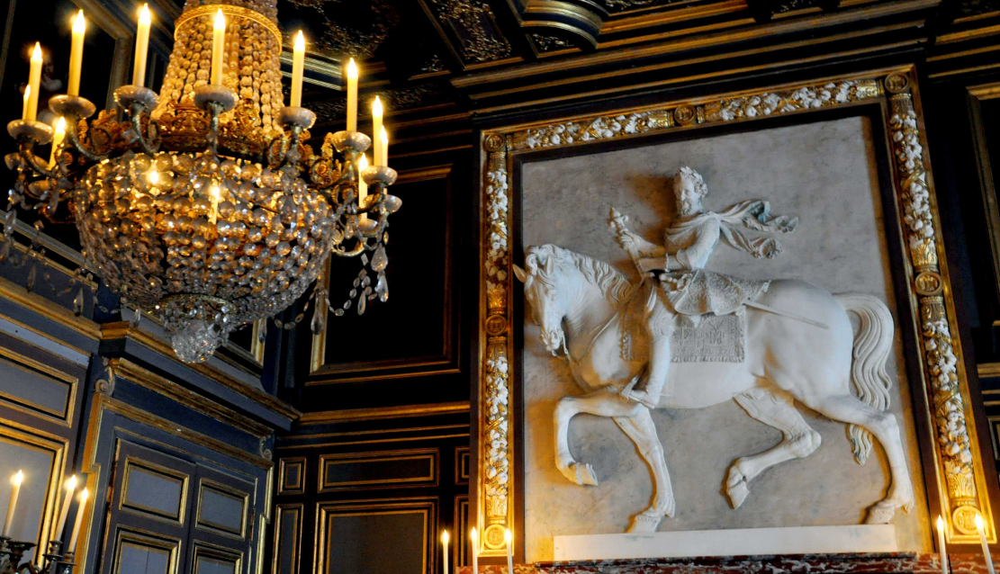

Ancienne chambre royale transformée par Napoléon en 1804, devenant le salon de l'empereur puis la salle du trône en 1808. Datant du XVIIe siècle, elle arbore des éléments remarquables comme le plafond aux armoiries, le lambris, les portes à fronton, et des bas-reliefs guerriers. Boiseries ornées de l'emblème de Louis XIII. Lire la suite...

Ancienne basse-cour devenue la cour d'Honneur du château au 17e siècle, elle fut transformée par Napoléon Ier, qui remplaça l'aile Ferrare par la grille d'honneur actuelle. Célèbre pour l'escalier en fer à cheval conçu par Jean-Androuet du Cerceau en 1632-1634, la cour fut le lieu des adieux de Napoléon à sa garde le 20 avril 1814. Lire la suite...

Henri IV a grandement enrichi l'esthétique du château de Fontainebleau, appréciant la quiétude loin de Paris. Entre 1600 et 1610, il a attiré les meilleurs artistes d'Europe du Nord. La salle de la Belle Cheminée conserve le portrait en marbre de Henri IV à cheval, réalisé par Mathieu Jacquet, témoignant de cette époque florissante. Lire la suite...